第1章 土壌——Tumblrとフォークソノミー
時間軸：1994〜2013年ごろ
GeoCitiesという楽園と、その消滅§
第1章の中心は Tumblr だが、その個人サイト文化の前史として GeoCities から見る。
{kind=link}
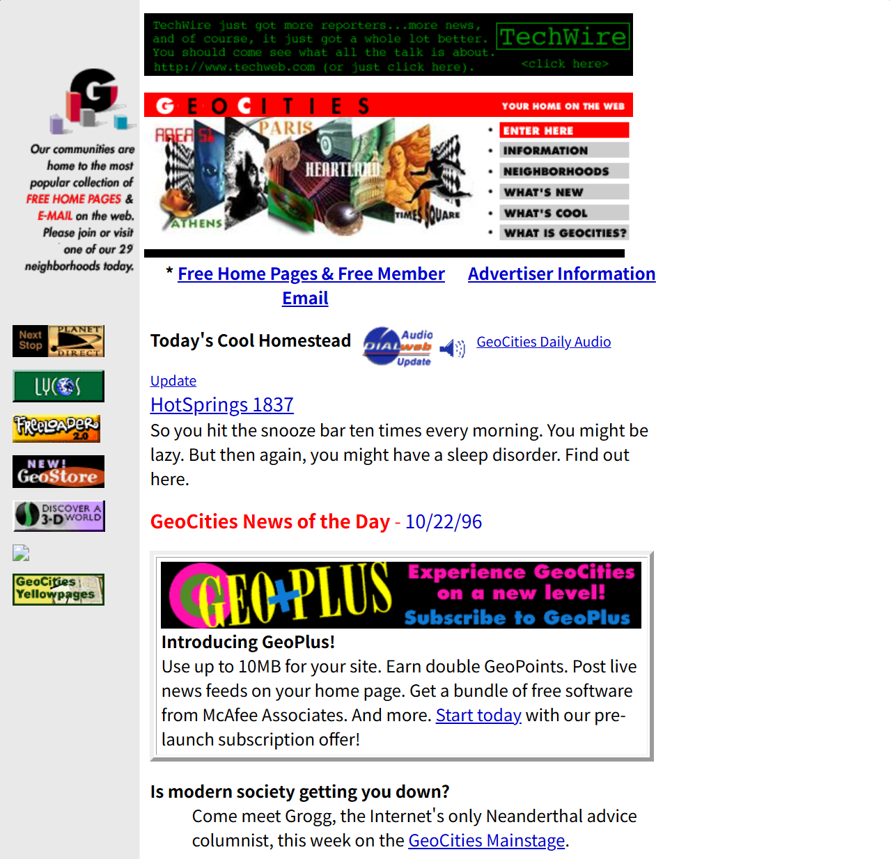
www.geocities.comの1996年10月時点でのウェブアーカイブのスクリーンショット
1994年、David Bohnettが立ち上げたウェブサービス「Beverly Hills Internet」は、翌年「GeoCities」と名を変えた。コンセプトはシンプルで、専門知識なしに誰でも無料でウェブページを持て、HTMLを少し覚えれば世界に向けて自分のページを公開できるというものだった。
GeoCitiesは街の構造を模した。ページは「Neighborhood（近隣）」に分類され、Hollywood（芸能）、Wall Street（金融）、SiliconValley（テクノロジー）、Heartland（アメリカ的価値観）など、テーマごとの「地区」があった。ユーザーはその地区の「住人」となり、自分のページに固有の「番地」を持った。
その住人たちが作ったページは、今の眼から見れば奇妙に賑やかだ。テキストを追いかけるマウスカーソル、自動再生のMIDI音楽、「工事中」を示すオレンジのコーンのアニメーションGIF、虹色に輝く区切り線、来訪者カウンターなどが組み合わさっていた。デジタル研究者のOlia Lialinaはこれを「ヴァナキュラーウェブ（vernacular web）」と呼んだ。専門家ではなく素人が、自分の言葉で、自分の美意識で作り上げたウェブの民俗で、無計画で過剰だが奇妙な生気に満ちていた。
1999年、GeoCitiesはYahoo!に約35億7,000万ドルで買収された。Yahoo!はGeoCitiesを収益化しようとしたが、うまくいかなかった。ページ数だけは膨らみ続け、ピーク時には3,800万以上のページが存在したとされる。しかし2009年10月26日、Yahoo!はGeoCitiesを閉鎖した。短い猶予期間の後、3,800万のページは消えた。GeoCities Archive ProjectやInternet Archiveがその一部を保存したが、大半は永遠に失われた。
{kind=link}
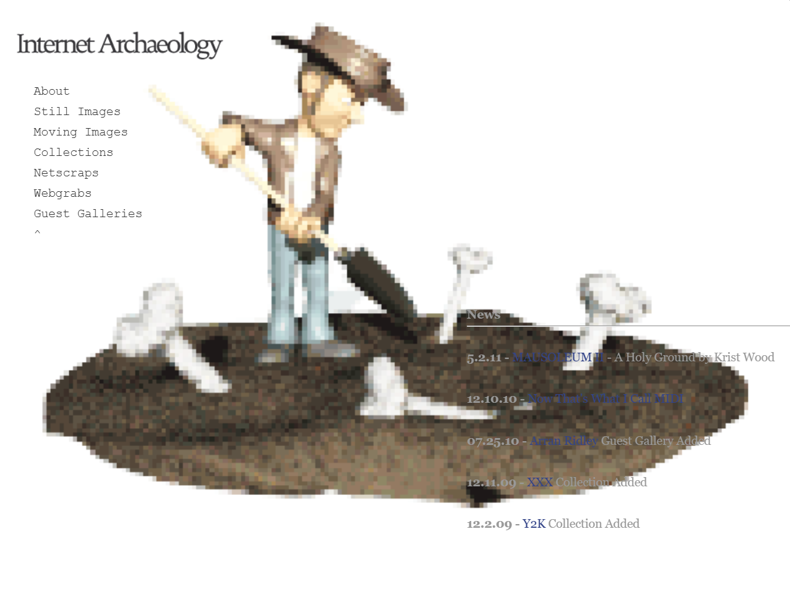
Ryder Ripps による Internet Archaeology (www.internetarchaeology.org/index.htm) の2012年1月時点でのウェブアーカイブのスクリーンショット
その応答のひとつが、デジタルアーティスト Ryder Ripps による Internet Archaeology だった。
2009年6月、Ryder Ripps は GeoCities 閉鎖のニュースを知り、ほとんど報道されないまま数百万の個人サイトが消えることに衝撃を受けたという。同年に立ち上げたプロジェクトは、初期インターネット文化のグラフィック・アーティファクトを探索・回収・アーカイブ・展示することを掲げた。Internet Archive が網羅的に保存するのに対し、Ryder Ripps の仕事はキュレーションだった。何を見せるかを選び、失われゆくヴァナキュラーウェブの表情を再提示する。
別の応答は、Olia Lialina と Dragan Espenschied による One Terabyte of Kilobyte Age だった。Archive Team が救出した GeoCities データの torrent を入手し、2011年から調査を始めた。2013年2月からは Tumblr ブログ One Terabyte of Kilobyte Age Photo Op が、当時のブラウザ環境で再構成した GeoCities ページのスクリーンショットを20分ごとに自動投稿した。
Ryder Ripps によるキュレーションと、Olia Lialina と Dragan Espenschied による機械的な自動投稿とが、GeoCities 閉鎖への応答として並んだ。
mp3ブログ——音楽を配り、選ぶ場§
GeoCities が個人サイトの更新を支えていた一方、音楽はそれとはすこし別の形でウェブを巡っていた。
2000年代の前半、「mp3ブログ」と呼ばれる音楽ブログが相次いで現れる。こうしたブログは、楽曲のファイルをダウンロードできる形で公開し、短い紹介文を添える。レーベルや大手メディアが拾う前に、無名のアーティストが聴き手と出会う場になった。
初期の代表的なひとつが、Matthew Perpetua が2002年に始めた Fluxblog だ。LCD Soundsystem をまだ無名のうちに紹介したことで知られる（2003年12月の記事）。Matthew Perpetua はその後、Fluxblogを運営しつつ Pitchfork や Rolling Stone などのメディアでライターとして活動する。
2003年に始まった Said the Gramophone はモントリオールから Arcade Fire や Wolf Parade を最初期に取り上げたという。現在まで音楽メディアとして続く Stereogum も元は 2002年1月に mp3 ブログとしてはじまった。これらのいずれも、何を聴くべきかを個人の耳で選び、短い言葉を添えて紹介するブログだった。
{kind=link}
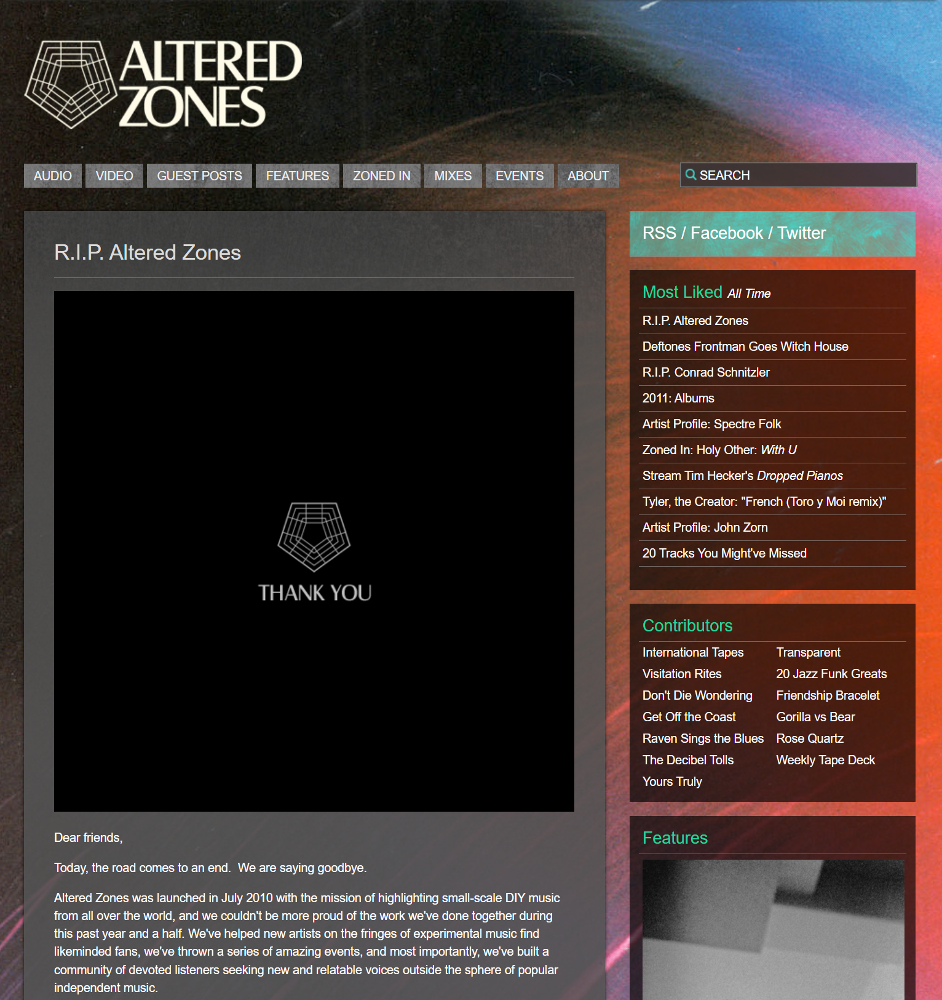
ALTERED ZONES の 記事「R.I.P. Altered Zones」のスクリーンショット
これらのブログは、単なる紹介にとどまらなかった。書き手の何人かは、やがて自分でレーベルやイベント、ZINEを始めていく。
Pitchfork が2010年7月に立ち上げた共同ブログ Altered Zones は、Gorilla vs. Bear、20 Jazz Funk Greats など14のサイトを束ねたものだった。その終了は、この動きを象徴している。Billboardによれば、Altered Zones はわずか16か月で閉鎖し、その2011年12月の声明では、寄稿者たちがブログを離れてレーベルを立ち上げ、会場を運営し、ZINE を作り、自分の音楽を作るようになったと記した。
初期の mp3 ブログは著作権上のグレーゾーンに置かれていた。音楽用の P2P 共有サービス Napster をめぐる訴訟が続いた1990年代末からの流れで、楽曲ファイルを公開するブログは停止通告書（cease-and-desist レター）や DMCA テイクダウン通知を受けることがあった。
しかし2000年代後半にかけて、レーベルは mp3 ブログをプロモーションの経路として認識しはじめる。
アーティストを大手メディアより先に取り上げるブログが、次のリリースへの関心を作るという構図が見えてきたからだ。Said the Gramophone の書き手は2009年に、「アルバムを丸ごと zip ファイルで上げでもしない限り、レーベルがブログを止めようとすることはもうない。レーベルとは仲間だ」と語っている。違法な配布の温床というより、音楽を選び、文脈を与え、次の流通へ橋渡しする層として、mp3 ブログは働くようになっていた。
ただし、プラットフォーム側のリスクは消えなかった。2010年2月、Google が Blogger 上の多数の音楽ブログを DMCA 申請に基づいて一斉削除した。これに対して Twitter では #Musicblogocide2k10 というタグが作られ、この削除への抗議が行われた。レーベルとの直接の敵対が和らいでも、ホスティングサービスへの DMCA 申請ひとつでブログごと消えるという脆弱性は残った。GeoCities と同じく、場を提供するプラットフォームの判断に、コンテンツはいつも依存していた。
MySpace——カスタマイズされる自己と音楽§
mp3ブログが音源の流通を担っていたのと並行して、別のプラットフォームは音楽シーンの土壌を形成していた。
2003年8月1日、Tom Anderson、Chris DeWolfe、Jon Hart が eUniverse の内部プロジェクトとして立ち上げた MySpace は、グローバルな規模に到達した最初のソーシャルメディア（SNS）だ。
MySpace の初期の急成長を生んだのは、既存 SNS から追放されたバンドのアカウントがそこに移住したからだったとされる。初期に知られていたソーシャルメディアの Friendster がバンドアカウントをプロフィール規約違反として削除しはじめると、インディーバンドが MySpace に移住したのだ。MySpace の創設者たちがLA の音楽シーンに関わっていたこともあり、ミュージシャンが最初から多くいたプラットフォームとなった。
MySpace が他の SNS と決定的に異なったのは、プロフィールの HTML と CSS を全面的に書き換えられたことだった。自動再生のプロフィールソングを設定し、背景や文字色を変え、「Top 8」でフレンドリストの上位8人を選んで並べる。
Codecademyの記事 によれば、数千万人にとってアンカータグやスタイルシートを触った最初の経験が MySpace のプロフィール編集だったという。GeoCities の「ヴァナキュラーウェブ」が、今度は MySpace のカスタマイズされたプロフィールという形で再現されていた。
{kind=link}
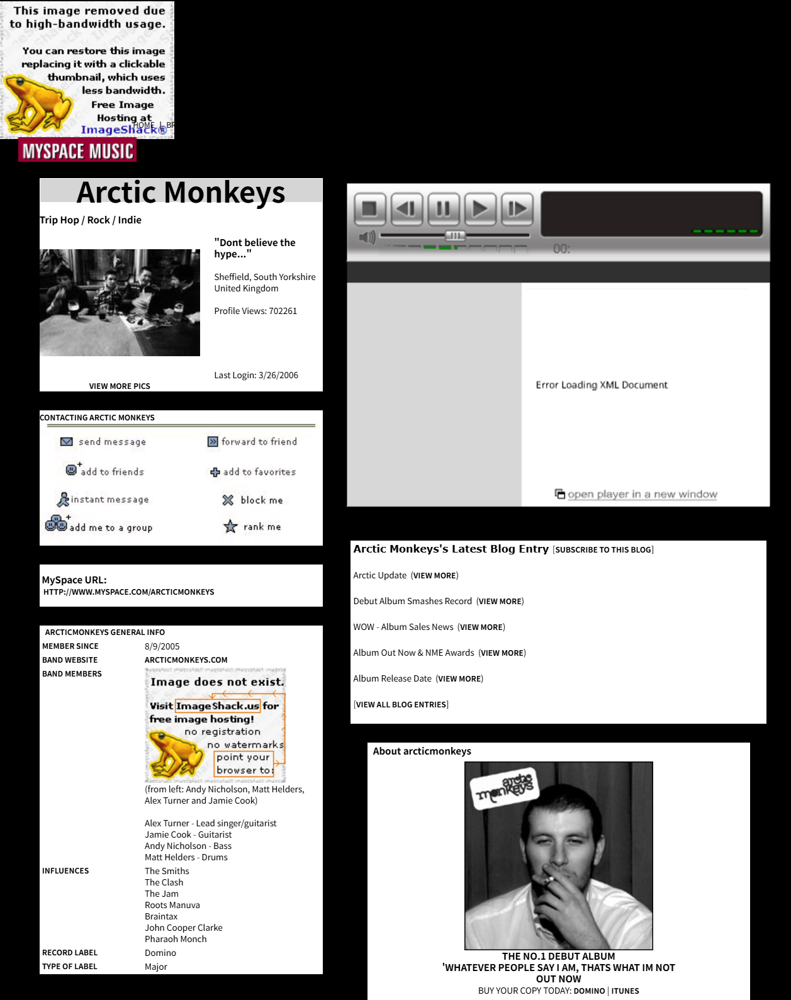
バンド「Arctic Monkeys」のmyspaceページのスクリーンショット
音楽の発見という点でも、MySpace は独特の役割を果たした。Arctic Monkeys は商業リリース以前にファンがMySpaceにアップロードしたデモで大きなフォロワーを獲得し、2006年1月のデビューアルバムはUK史上最速で売れたデビューアルバムになった（Internet-history.info）。
Lily Allen はレーベルのサポートが得られないまま自分でデモを MySpace に公開し、そこで注目を集めたという（The National）。Adele は友人が Lily Allen のトップフレンドに掲載されていたことで注目を集めたといい、さらにはキャリアのすべては MySpace に登録してくれた（別の）友人のおかげであると振り返っている（E! News インタビュー）。
MySpace で「発掘」されたポップスターをまとめた The National の記事では、Arctic Monkeys などのほかに、Calvin Harris や Avicii なども挙げられている。
MySpace は2005年に News Corp が5億8000万ドルで買収し、2006年にはGoogleを抜いて米国で最も訪問されたウェブサイトになった。しかし2008年に Facebook に追い抜かれ、2011年には Justin Timberlake らのグループに3500万ドルで売却される。そして2018年、サーバー移行の不手際によって12年分、約5300万曲・1400万アーティスト分の音源が失われたことが、2019年3月に発覚した。
GeoCities の消滅が個人ページを、MySpace の事故が音楽のアーカイブを、それぞれ一度に消した。Cory Doctorow はBoing Boingで「プラットフォームにデータのアーカイブを委ねてはいけない」と警告し、Internet Archive を勧めている。
Tumblrというアーキテクチャ§
{kind=link}
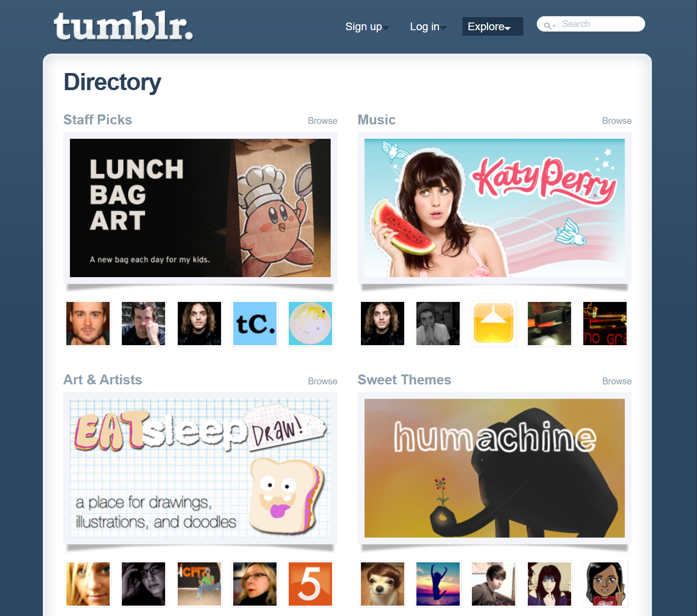
tumblr.com/directory の2009年2月時点のアーカイブのスクリーンショット。当時の代表的なtumblrブログが並ぶ。
David Karpは2006年、自身のウェブコンサルタント会社「Davidville」を経営しながら、tumblelog（短形式ブログ）への関心を持っていたという。短い投稿を連ねるスタイルのブログを作りやすくするサービスが欲しかったが、既存の大手プラットフォームは対応しなかった。約1年待っても誰も作らなかったため、自分で作ることにした。
Craigslist で募集に応えた Marco Arment を第一エンジニアとして迎え、2週間の集中開発を経て、2007年2月19日に Tumblr は正式公開された。公開から2週間以内に75000ユーザーを獲得したという。
David Karp は既存のブログプラットフォームを「形式が固定されすぎている」と感じながら、一方で MySpace のカスタマイズを肯定的に見ていた。SXSW での発言によれば、MySpace の多くは確かに雑然としていたが、少なくともユーザーが時間をかけて個性を表現しようとしていた。
David Karp から見れば、Facebook はソーシャルメディアにおける「醜さ」を終わらせた。ただしそれは、ユーザーが好みに合わせてカスタマイズする自由を取り除くことで実現されたものだった。David Karp は TechCrunch のインタビューで「Facebook で自分のアイデンティティを誇りに思う人はだれもいない」と語っている。Tumblr は、MySpace の持っていた個性表現の場を、別の形で引き継ごうとしていたのだ。
リブログ：転載と帰属の連鎖§
他のユーザーの投稿を自分のブログに転載する機能が、2007年3月には実装されていた。転載された投稿には、元の投稿者とリブログのチェーンが保持された。誰がどこを経由して投稿が広まったかが、投稿の下部に記録されていく。
この機能は、Twitter の「リツイート」（2009年）や Facebook のモバイルサイト・アプリへの「シェア」（2012年）に先行していた。ニューヨークのアートテクノロジーセンター Eyebeam で開発された「ReBlog」ツール（2004年）からインスピレーションを得た設計だった。Eyebeam の ReBlog には Jonah Peretti（後の BuzzFeed 創業者）が関わっており、「reblog」という語と概念の起源はここに遡るという。
タグ：受け手が意味を付与する仕組み§
2007年11月の機能追加で、投稿にタグを付けられるようになった。さらに重要なのは、リブログの際に受け手が独自のタグを付与できたことだ。発信者が命名・投稿し、受容者がタグで意味を付与するループが技術的に内蔵されていた。
テーマシステムとフォトセット：ムードボードの器§
最初から搭載されていたテーマシステムは、ブログの HTML / CSS を直接編集できる機能で、ユーザーは自分のブログを完全にカスタマイズし、特定の「雰囲気」を演出するテーマブログを作ることができた。あるテーマで統一されたブログは、音楽や画像の集積がひとつの世界観を帯びていくムードボードとして機能した。
2009年6〜7月に追加されたフォトセット機能（複数の写真をグリッドレイアウトで一投稿にまとめる）が、「画像による世界観の構築」を決定的に容易にした。この設計の集積により、Tumblr は雰囲気をタグ化する場所になった。
フォークソノミーという論理§
{kind=link}
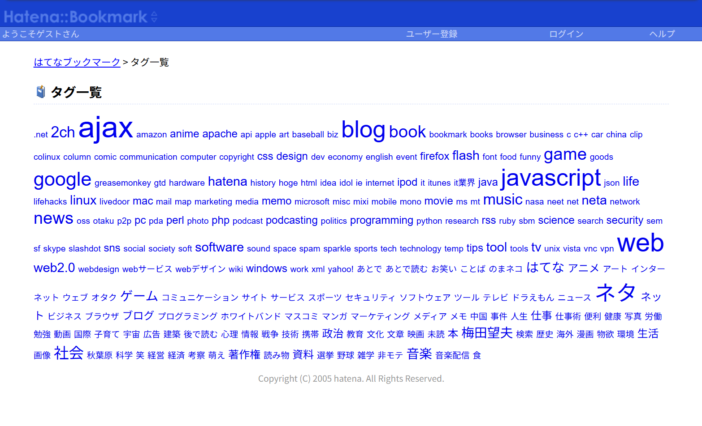
はてなブックマークの2005年9月時点のタグ一覧のスクリーンショット。タグクラウドのように、使われる頻度で大きさが変わっているタグの一覧。
Tumblr のタグは辞書とは異なる仕組みを持つ。辞書には定義がある。専門家が意味を決め、印刷し、権威として流通させる。しかし Tumblr のタグは誰でも自由に付けられる。「#dark academia」というタグが最初に何を意味していたか、誰が最初に付けたかは問題ではない。無数のユーザーがそのタグを使い続けることで、タグの意味が事後的に確定されていく。
これを情報科学では「フォークソノミー（folksonomy）」と呼ぶ。folk（民衆）とtaxonomy（分類学）を合わせた造語だ。中央集権的な分類体系とは異なり、フォークソノミーにおいてはタグの意味が使用の集積によって決まる。ここには重要な特性がある。間違いが多数派になった瞬間に「正しさ」になるということだ。
{kind=link}
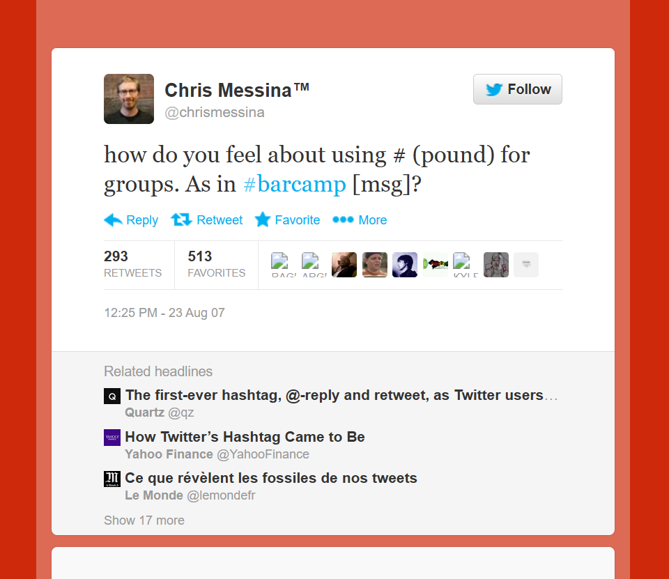
Chris Messinaのハッシュタグを提案するツイートのスクリーンショト
このロジックはハッシュタグの誕生にも見ることができる。2007年8月23日、Chris Messina がウェブサービス「Twitter」に向けて、「#記号を使ってグループを作ることができないか」（#barcamp [msg]?）とツイートした。
背景にはセマンティックウェブ運動に関わるbarcampコミュニティや、HTML に機械可読な意味を付与するボトムアップなMicroformats運動の発想があった。Chris Messina は Twitter の共同創設者である Biz Stone に直接提案したが、「ニッチすぎる」と却下された。
2007年10月、カリフォルニア州サンディエゴの大規模山火事で、Chris Messina が Flickr タグ sandiegofire の使用を呼びかけ、ハッシュタグが娯楽を超えた初めての実用的な集合知ツールとして機能した。その後、コミュニティはハッシュ記号を用いる #tag 記法を使い続け、2009年に Twitter がクリッカブルリンクとして公式採用する。
コミュニティの自然発生的な慣習が先にあり、仕様がそれを後から追認した。「使用の集積が意味を確定する」というフォークソノミーの論理は、ハッシュタグそのものの誕生過程にも刻まれている。
Tumblr ではこのフォークソノミーが、画像と音楽と文章を横断して機能した。誰かが「#vaporwave」とタグを付け、別の誰かが同じタグで別の画像をリブログし、また別の誰かがその画像を見て新しい音楽をアップロードして同じタグを付ける。
2007年後半、スペイン・バスクの Gorka Julio が Microformats Wiki に Nanoformats 草案を投稿し、Twitter 上の @username や #tag といった自然発生的慣習を体系化した。2008年にはhashtags.org の実績が後押しし、tag: 記法は廃止され #tag（ハッシュタグ）への統一が承認された。 # 記法にも、コミュニティ慣習が仕様草案を後から追認する構造があった。
命名者が何を意図したかは関係なく、タグのもとにコンテンツが集積し、そのコンテンツの集積がタグの意味を確定していった。
ポストインターネットアートという土壌§
Tumblrが美学ミームの温床になる前に、その土壌を豊かにしていた動きがあった。それがポストインターネットアートだ。
語の起源は複層的だ。2004年ごろ、オンラインのアートフォーラム「Rhizome」で Valery Crancher らが使っていた “post net.art” という概念が原型とされる。オンラインのネットアートだけでなく、オフラインでの実践も含めようとした試みだった。 それが2008年に Marisa Olson によって「インターネット以後の芸術」の意味で改めて使われ、バズワードとして広がった。この「ポストインターネットアート」という語はやがて拡大解釈され、Tumblrに投稿される特定の画像群や、ネットで活動する音楽家たちも包含するようになった。 2009〜2011年の Tumblr には、おおまかに二つの流れが並走していた。少数だが濃いポストインターネット系の実践と、数としてはるかに多い写真・GIF・ムードボード系の流通だ。
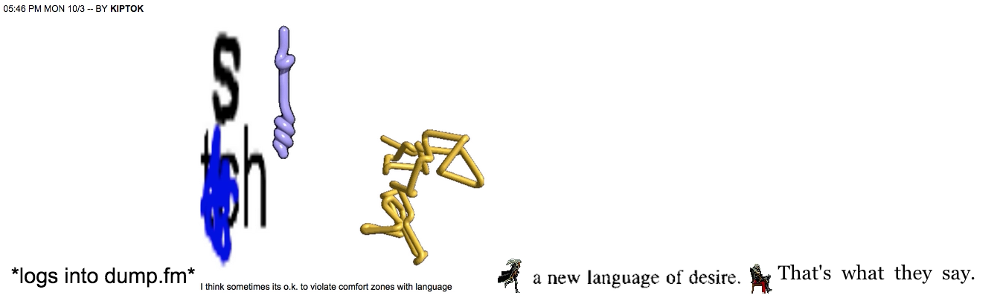 hyperallergic.comの記事からdump.fmのスクリーンショットを引用した画像。ナンセンスな画像コラージュ。 Joe Milutisによる hyperallergic.com の記事 はじめの流れのハブとなったのが dump.fm（2010年〜、Ryder Ripps・Tim Baker・Scott Ostler）と The Jogging（2009年〜、Brad Troemel ら）だった。 dump.fm はリアルタイムの画像チャットで GIF を改変・合成する「talk with images」の場であり、両者はポストインターネットの批評が指す中心的プラットフォームとして並んで言及された。 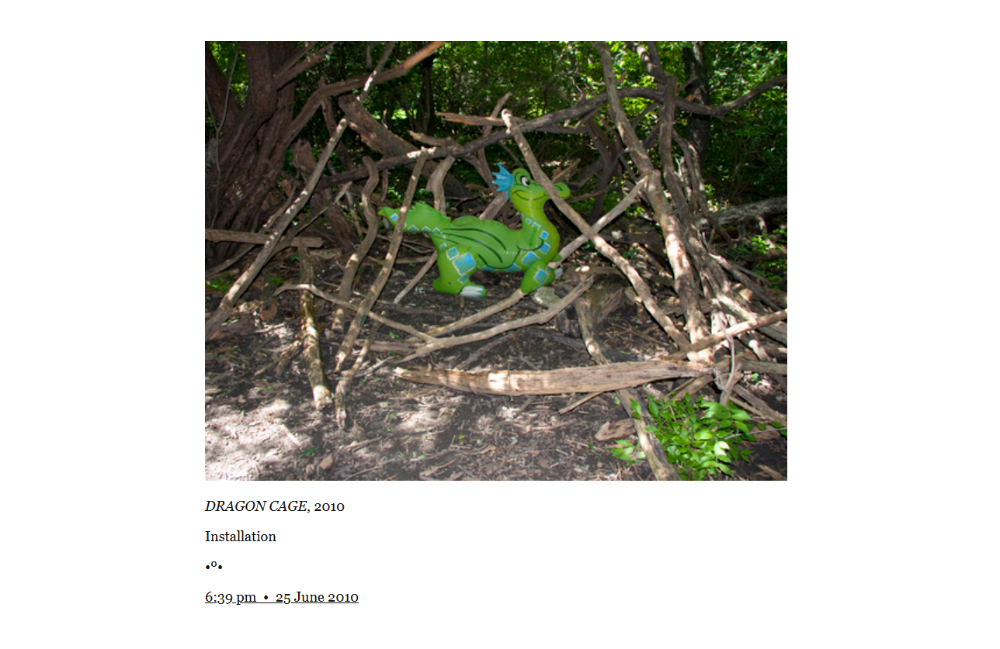 the joggingの投稿「DRAGON CAGE」のスクリーンショット。ドラゴン型の風船が木々の枝に囲まれた風景写真を、tumblr上の投稿として展示している場面。 The Jogging は自己紹介に “an original content blog that displays immaterial works of art and writing（非物質的な芸術作品や文章を展示するオリジナルコンテンツのブログ）” と掲げ、投稿のすべてに「タイトル・年・種別（Sculpture / Performance / Installation / Image）」というギャラリーのキャプション形式を付していた（2010年当時のアーカイブ）。The Jogging の形式は、ネットから拾った画像や Photoshop で加工した素材を「無形の作品」として額装して並べるものだった。 Ryder Ripps は Internet Archaeology のあと dump.fm や The Jogging にも関わっている。GeoCities 閉鎖（2009）への応答から、Tumblr 上のポストインターネットアート実践のハブまで、同一人物でつながる例だ。 The Jogging の実践は、Tumblr のアーキテクチャとも意識的に絡み合っていた。 2010年6月、The Jogging は「Positive Feedback」と名付けた実験を開始した。直近の投稿が35ノート（いいね＋リブログ）に達したとき、次の新作が公開されるという仕組みで、閲覧者の拡散行動が制作の公開タイミングを直接決めた。Tumblr のノート経済を流通の外側に置くのではなく、制作リズムそのものに組み込んだ試みだった。Brad Troemel はこの問題をのちに論文「Athletic Aesthetics」でも理論化し、リブログの速度と頻度に最適化される制作態度を分析している。 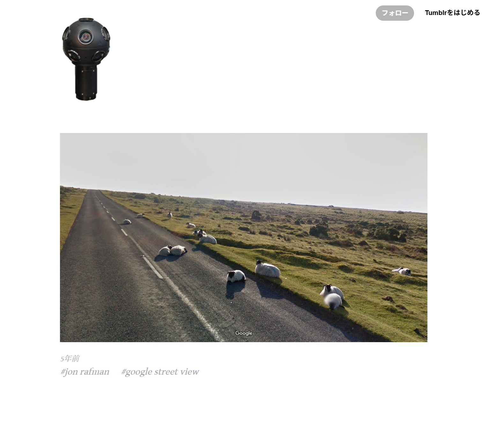 jon rafmanによるプロジェクト「9 Eyes」の投稿のスクリーンショット。元は google streetview のスクリーンショット。道に羊が並んでいる。 同じ時期、ポストインターネット系の Tumblr では別の種類の画像実践も並走していた。 Jon Rafman の「9 Eyes」（2008年〜）は、Google ストリートビューのスクリーンショットを Tumblr 上で再文脈化するプロジェクトで、偶発的な記録画像を「見出す」行為そのものを前景化した。 ニューヨークで2010年に創設された DIS Magazine も公式サイトを主軸に、Tumblr をイメージ流通のサテライトとして並走させながらポストインターネットアートの場で活動し、やがてアーティスト紹介のハブとなっていった。DIS Magazine による dump.fm とのコラボレーション「DIS/dump」も、両者の画像感覚を示している。 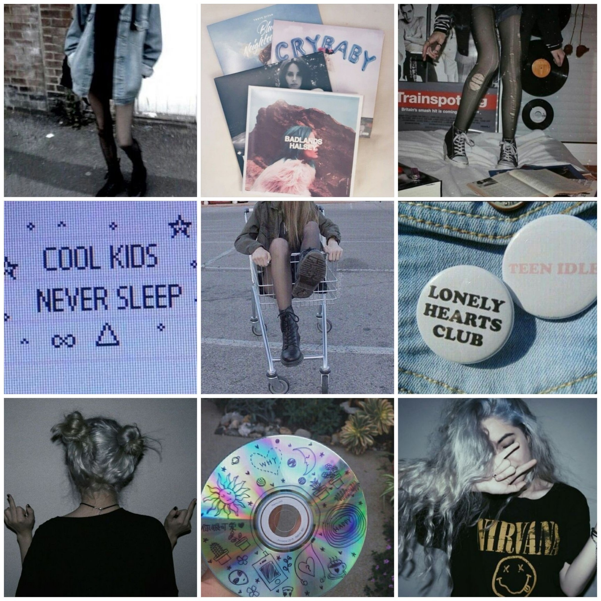 @theprettieststarxx によるtumblr投稿から画像引用。soft grunge のムードボードとして、写真が複数枚組み合わされた画像。このムードボード自体は「2014 soft grunge」をテーマに2024年に作成されたものであることに注意。 ふたつめの流れは、グレインのあるモノクロ写真、タイプライター風の引用文、パステルカラーのムードボード、映画スチルから作る gif などで、ユーザー数ではこちらの方がはるかに多かった。MySpace の emo や scene カルチャーが 2009〜2010年に Tumblr へ移り、 soft grunge とくくられるイメージやファッションが広がった。 英語版 Wikipedia によれば、soft grunge のファッションは、もともと indie sleaze と呼ばれることになるトレンドから派生し、Tumblr 上でより暗い要素と混ざりあって生まれた。indie sleaze は2000年代後半のニューヨークやロンドンのシーンを後年になって遡及的に名づけたもので、その名が広まるのは2021年以降のことだ。ある個人ブログは、こうしたトレンドの Tumblr ブログ全体が「なりたい自分の姿」を映す装置として機能した、と書いている。 写真キュレーションブログや、2010年当時の Tumblr の gif サイズ上限（1MB）のなかで工夫された gif アニメのループ文化も、この薄く広い流通を支えた（Transformative Works and Cultures）。「soft grunge」という言葉自体は2012年末から2013年初頭にかけて知られるようになった。 2014年2月、英語版 Wikipedia に 「Soft grunge」 が立項されている。Tumblr 発のファッションとして記され、初期には soft grunge を起点に pastel grunge 、 pastel goth 、 seapunk といったバリエーションが派生したと言及されていた。「90年代のグランジカルチャー」を現代に取り入れたものであり、90年代の geocities から切り取ったような低品質のビットマップ画像を使うことがみられる、と lo-fi 感覚と連続したセンスを感じさせる記述もあった。 「aesthetic」とは書かれていないものの、Tumblr から生まれた「音楽ジャンルであり、ファッショントレンドであり、デザインスタイル」と、今日の aesthetic 的説明に近い整理がなされている。美学ミームの土壌は、こうしたイメージの流通や流行からも形成された。 この二つの流れは、名前や出どころとの距離という点でも対照的だった。ひとつめの流れの周辺、つまりネット上での活動を重視する作り手の一部は、ハンドルや別名義を活用してネット上のペルソナとして現れた。ふたつめの流れでは、画像のほうが作者の名から離れてリブログや転載されていった。どちらも、のちの章でくりかえし出会う特徴の出発点になっている。
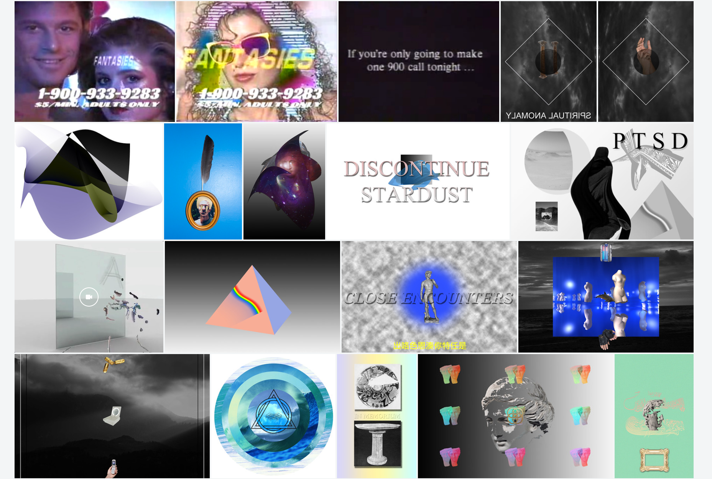 2010年1月頃にflickrへ投稿されたMEGAZORDの作品の一部のスクリーンショット。アイロニカルなテキストや古典彫刻を組み合わせた抽象的なコラージュ作品が並ぶ。 Megazord は主に Tumblr で活動したデジタルアーティストで、dump.fm や The Jogging とは別系統のアーティストだ。Megazord（Christian Oldham）の作風は、低解像度や 16bit 的な質感のコンピュータ支援画像と、ダークでサイバーディストピア的な雰囲気、アイロニカルなテキストや引用が同居するデジタルコラージュとして語られる（Rhizome Artbase）。 古典彫刻の石膏像、広告スチル、インターネットから拾った画像を切り貼りし、2009年ごろから Tumblr と Flickr に大量に投稿し、リブログされるたびに参照元として拡散していった。『Post Internet Survival Guide 2010』（Katja Novitskova）や、2011年1月のベルリン Future Gallery 展示にも選出されている。 Oneohtrix Point Never のミュージックビデオを制作し、Daniel Lopatin と Joel Ford のユニット Games のアートワークも手がけた。proto-vaporwave と呼ばれることになる音楽と Tumblr の視覚文化は、Megazord という人物のもとで交差している。 Megazord の出自自体はどちらかといえばふたつめの流れ、つまり気ままに画像を投稿することにある。Tumblr での影響力が大きくなるにつれひとつめの流れとも関わるようになったという点で、Tumblr の画像文化を象徴するデジタルアーティストということもできる。 2012年9月に日本で出版された書籍『Designing Tumblr』（BNN、古屋蔵人・高岡謙太郎 編）は、Jon Rafman や Ryder Ripps といったポストインターネットアート系のアーティストの Tumblr ブログも日本の読者に紹介している。ポストインターネットアートと Tumblr の視覚文化が不可分に結びついていたこと、そしてその動向が日本語圏に輸入されていたことを記録している。 2012年の『Designing Tumblr』に続いて、日本語圏では雑誌の特集を通じてもポストインターネットの動向が紹介されていった。2014年8月に発売されたグラフィックデザイン誌『アイデア』No.366（9月号）は、特集「ポスト・インターネット時代のヴィジュアル・コミュニケーション」を組んだ。企画・監修は、前年に『Designing Tumblr』を編んだ高岡謙太郎と、のちに『新蒸気波要点ガイド』の年表・辞典を書くばるぼらだ。国内の Pixiv やニコニコ動画ではなく、英語圏を中心とするプラットフォーム群の上で育った世界的な潮流に焦点をあてている。 同号にはネットアーティスト pootee へのインタビュー「networking and inter-viewing with pootee」（聞き手：アイデア編集部と高岡謙太郎、紙上では takaoka 名義）も収められており、当時の日本語圏での受容や、英語圏と並行して動いていたシーンを示している。 翌2015年6月号の『美術手帖』も「ポスト・インターネット」を特集した。いずれも日本語圏独自の系譜を一本に束ねるものではない。語の起源と流通経路§
二つの流れ：ネットアートと soft grunge§
ポストインターネットアートと tumblr§
soft grunge と tumblr§
二つの流れの対比§
Megazord§
日本語圏での受容§
{kind=link}
{kind=link}
{kind=link}
{kind=link}
{kind=link}
James Bridleの「新しい美学」§
{kind=link}
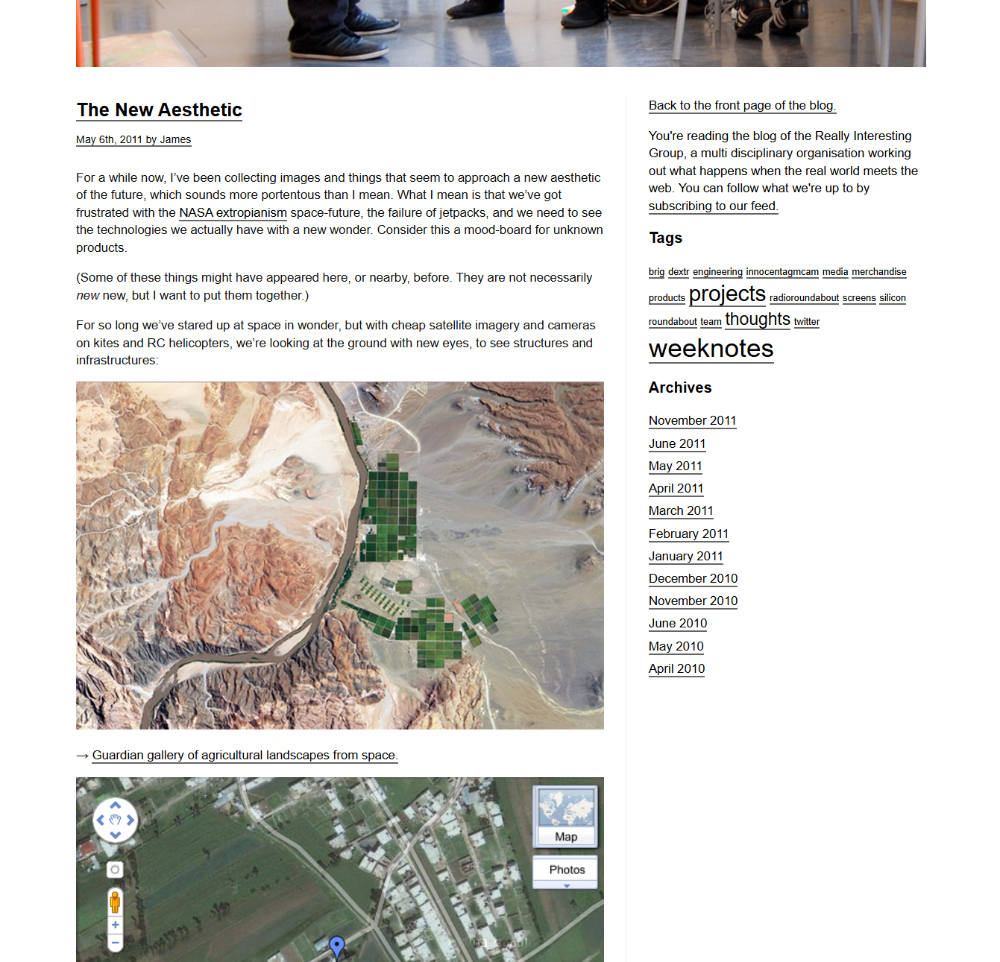
james bridleによる「Tne New Aesthetic」ブログ記事のスクリーンショトショット。
2011年5月6日、ロンドンのデザイナー James Bridle は自身のブログに一本の記事を投稿した。タイトルは「The New Aesthetic」。同日、同名の Tumblr ブログも開設した。
記事の内容は一種のムードボードだった。衛星写真の粗いピクセル、コンピュータが生成した軍用ドローンの迷彩パターン、Instagram の写真フィルター効果、顔認識技術が失敗したときに生じるノイズ。これらを並べながら、James Bridle はコンピュータの「見え方」が人間の視覚文化に滲み出している現象を観察した。
これは美学ミームではない。しかしいくつかの点で後の美学ミームと連続している。Tumblr ブログとして出発していること、「aesthetic」という語を固有のタームとして使っていること、ムードボードという形式を採用していること。2012年3月の SXSW でのパネル、同年4月2日の Bruce Sterling による WIRED への論考がこれを広めた。こうして「New Aesthetic」はひとつの運動の名前として定着した。
Bruce Sterling によれば、New Aesthetic は “an eruption of the digital into the physical.（デジタルが物理世界に噴出すること）” を主題にしているという。ポストインターネットアートはインターネットが一般化したあとの社会での芸術実践に焦点を当てる。この意味で New Aesthetic は、Tumblrブログ上で展開されたポストインターネットアートの取り組みの一つと見ることができる。
New Aesthetic は、のちに語る vaporwave や seapunk といったマイクロジャンルの初期の批評でもたびたび触れられる。インターネット美学の「Aesthetic」という言葉がここからきたわけではない。ただし、これらの共通点に加え、批評メディアを通じて拡散したという点も、美学ミームの成立における「伏線」としての役割を見ることができる。
Reblorg：Tumblr公式のキュレーション§
{kind=link}
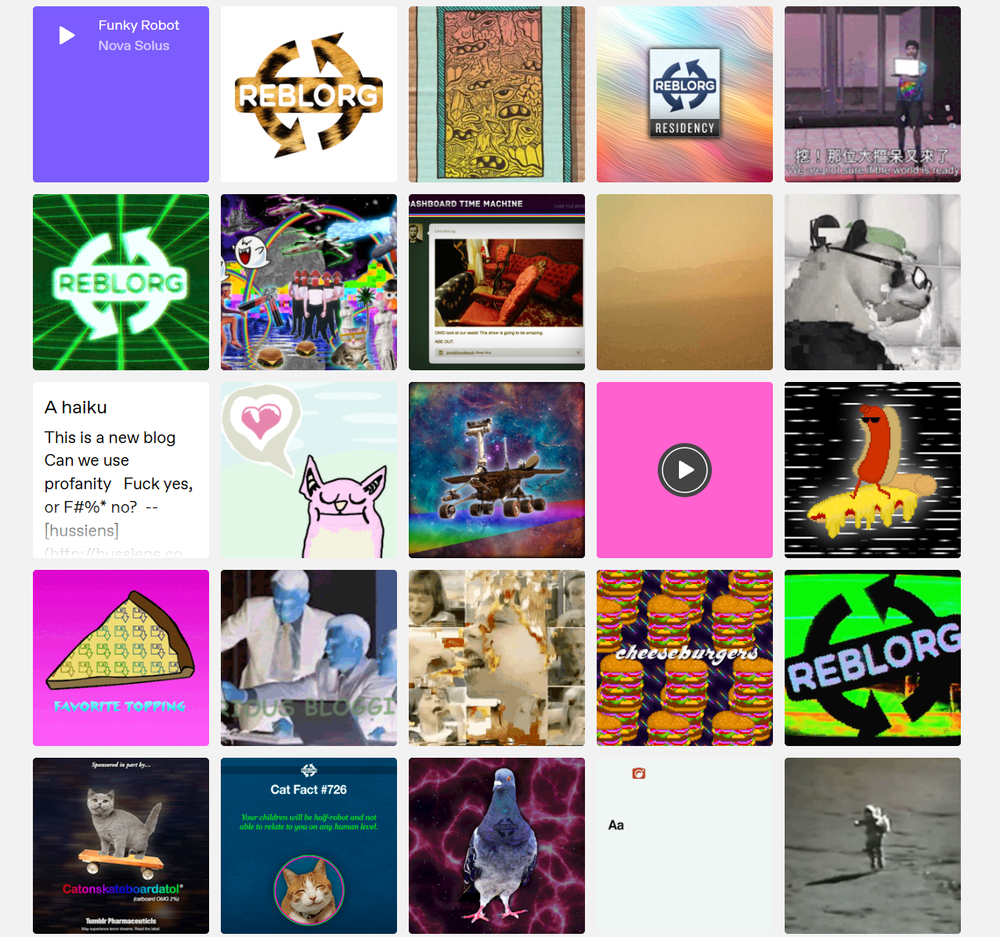
reblorg.tumblr.com/archiveの作品一覧のスクリーンショット。ナンセンスな内容のリピートGIFアニメが並ぶ。
2008年以降、Tumblrの画像文化はユーザーのブログとリブログの連鎖のなかで育っていた。前節のポストインターネットアートや New Aesthetic は、そうした土壌のなかで批評家やアーティストが各自観察したものだ。
しかし、あの時期の Tumblr にどんな画像が流れていたかを、プラットフォーム自身が公式に選び直し、名前を付けて広めた事例もある。それが Tumblr Editorial 部門が運営する公式キュレーションブログ Reblorg だ。個々のユーザーブログとは別に、運営が「これが Tumblr 上のオリジナル Web art だ」と判断した投稿だけを再掲する窓口だった。
Reblorg は長文インタビュー中心の Storyboard とは別系統の公式プロジェクトとして、2012年8月7日に立ち上げられた。ユーザーが自作した投稿を複数の経路から集め、スタッフが選んで Reblorg 本体に載せた。募集条件は「自分で作ったこと」「新しいこと」の二点だけだった。
キュレーターは Tumblr 公開直後に参加した Christopher “topherchris” Price で、のち Editorial Director となった。公式告知では、動画やアニメーションから俳句まで、ジャンルを問わず “all welcome” とされていた。
Reblorg に載ったのは、Tumblr 全体の断面ではない。立ち上げ直後、 The Verge が紹介したのは、ピザの上をサーフするサングラス付きホットドッグの GIF、頭からタコスを撃ち出すハトの映像といった、意図的に不条理なミーム的ループアニメだった。Tumblrが冗談めかして「The only website on the Internet」と呼ぶ通り、理解不能さを味わいとして楽しむ文脈に近い。当時のレビューは、多くの作品を “strange and bizarre（奇妙で不可解）” だと評している。
アーカイブ（reblorg.Tumblr.com/archive）を眺めると、グリッチ、ビットマップ風のイラスト、スクリーンセーバー的グラフィック、短いアニメーション GIF といった「Web art」的な画像を見ることもできる。
一方、Tumblr で共有される画像の多数派だった soft grunge 的なヴァナキュラー写真や、ブログのカスタマイズとキュレーションそのものがコンテンツでもあったムードボード型ブログの雰囲気は、ここでは見ることができない。
キュレーターの Price は Reblorg を通じて、こうした作品群を「インターネット・アート（Internet art）」と呼んでいた。Fast Company の取材では、その理由を、技術とインターネットがなければ存在し得なかったからだと説明している。
これは James Bridle の New Aesthetic が観察した「コンピュータの見え方の滲み出し」と問題意識が近いともいえる。前節のポストインターネット系の濃い実践と、GIF・グリッチ中心の軽い投稿群とを、Tumblr 公式がひとつの「Web art」として掬い上げようとした試みでもある。
ただしこれは限界もはっきりしている。Reblorg は2008〜2011年に Tumblr で静かに蓄積されていた感触のすべてを記録したわけではない。公式キュレーションが対象にしたのは、Tumblr 上でよりはっきり「アート」として見えるニッチな部分に限られていた。
それでも、プラットフォーム自身が、この時期の Tumblr 画像語彙の一端を「Web art」として名指し、拡散の回路に乗せたことは事実だ。2012年11月、BuzzFeed が Rihanna の SNL 出演をめぐる記事を書いた。そこで Fluxblog 運営者の Matthew Perpetua は、読者がそのビジュアルに見覚えがあるはずだと述べ、Reblorg の存在を引き合いに出した。
Tumblr 上で活動するポストインターネットアーティストたちと、James Bridle の「The New Aesthetic」と、Reblorg が示した公式キュレーションの輪郭、そして DIS Magazine 。やがて生まれることになる美学の群れは同じ土壌から育っていた。
ここまで見てきた前史と事例を、アーキテクチャとして一度整理する。
アーキテクチャが開いた可能性の空間§
タグ化、流通、参与§
Tumblr がなければ美学ミームは生まれなかったのか。おそらくそうではないだろう。同じ頃、Pinterest は2010年に公開され、画像のコレクション文化を拡大した。Instagram は2010年に登場し、フィルターをかけた写真を世界に発信する場になった。これらのプラットフォームも同時に美学ミームの発展に重要な役割を果たしている。
しかし Tumblr は、美学ミームが最初に育った土壌として、リブログ・タグ・フォトセット・テーマカスタマイズが一体として機能した点で際立っていた。いずれか単独ではなく、その組み合わせが「雰囲気をタグ化する」「ある感じを一語で指し示す」実践を可能にした。
こうして付けられたタグの多くは、当時は aesthetic という語とは結びついていなかった。見た目とムードでくくるラベルのクラスタの一部が、のち aesthetic と呼ばれて数えられるようになる。そして aesthetic という枠組みが成立すると、そこに当てはまるものを探し、その枠組みの中で aesthetic を作る動きが生まれる。つまり、この土壌のうえで aesthetic としての個別ラベルの生成が加速する。
美学の発見は、タグページを毎回能動的に検索し続けることだけでは成り立たなかった。フォローしたブログの投稿やリブログがダッシュボードに流れ、そこから別のブログへたどり着く。「ブログ→リブログ→ブログ」という連鎖が、美学を知る主要な回路だった。
フォロー網に基づく類似ブログの推薦や、フォロー中タグの人気投稿がダッシュボードに混ざる機能もあった。いずれも、すでにつながったソーシャルグラフのなかをコンテンツが伝播する構造だった。最初の一歩、つまりあるブログをフォローする、あるタグを追う、というステップを踏んだあとは、半受動的にクラスタの縁へ近づいていく感覚もあった。
美学コミュニティへの参加にも段階があった。流れてきた画像をなんとなく「いいな」とリブログするだけの行為も、同じソーシャルグラフのなかにあった。
一方、美学カルチャーに本格的に足を踏み入れるには、もう一段のハードルがあった。ブログ全体をその美学に合わせてカスタマイズし、テーマとしてリブログを重ね、タグで意味を付与していく。クラスタの一員として可視化されるには、この程度の能動性と時間を要した。
この構造が、ゆっくりと有機的に育つ美学の形成を可能にした。命名者が誰か分からないまま、複数のユーザーが少しずつ積み重ねることで美学と呼ばれるラベルが形成されていく。
土壌の位置づけと二つの流れ§
ポストインターネット節で対比した二つの流れ、つまり少数の濃い実践と、数としてはるかに多い soft grunge 的な実践は、いずれも同じタグとリブログの仕組みの上で行われていた。ここまで見てきたのは、その仕組みそのもの、つまり見た目やムードをタグでくくり、似た画像を集積していくラベル生成の加速だった。Tumblr 的なフォークソノミーは、「aesthetic」という語が枠として厚くなる以前から、またその用法が変わったあとも、ラベルを付けて流通させる環境として続いていく。
プラットフォームのアーキテクチャは文化を決定しない。しかし可能性の空間を開く。Tumblr が開いた空間の中で、美学の形成につながる活動がうまれた。